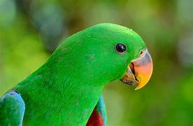
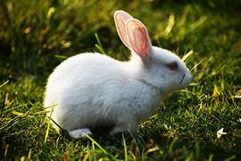
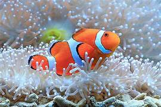

Welcome to the World of Pets
Cat
Cats are inquisitive and self-reliant animals recognized for their playful antics and gentle purring. They are relatively low-maintenance and adjust easily to both indoor and outdoor settings. With a strong hunting instinct, cats enjoy exploring their environment. They can also be loving companions, often found relaxing in sunny areas. Having a cat can significantly alleviate stress and add happiness to your household.
Dog

Dogs are known for their loyalty and friendly nature, earning them the title of "man's best friend." They exist in many breeds, each showcasing distinct characteristics such as size, temperament, and energy levels. Dogs need regular physical activity, making them ideal companions for active people or families. Their protective instincts and intelligence enable them to be outstanding guardians and service animals. The love and companionship of a dog can forge strong, lasting connections with their owners.
Parrot
Parrots are vibrant and clever birds celebrated for their talent in imitating human speech and various sounds. As social beings, they flourish through interaction and can form strong attachments to their owners. To stay engaged, parrots require mental stimulation and enjoy toys and activities that keep them occupied. With appropriate care, they can live for many years, often becoming lifelong friends. Their colorful plumage and playful antics provide endless enjoyment for those who observe them
Rabbit
Rabbits are calm and gentle animals characterized by their soft fur and long ears. They are sociable beings that love to interact with both humans and fellow rabbits. These animals can be trained to use a litter box, which makes them great indoor companions. They need ample space to hop around and play, as well as a diet that includes plenty of hay and fresh vegetables. Their charming twitching noses and playful behavior endear them to many pet owners.
Fish
Fish make for tranquil and captivating aquatic pets that enhance the ambiance of any setting. With a wide array of shapes, sizes, and colors, they create visually appealing aquariums. Caring for fish involves ensuring good water quality and a balanced diet. Observing their graceful movements can be soothing and calming. Common species such as goldfish, bettas, and guppies are easy to care for and ideal for newcomers to fishkeeping. With appropriate attention, aquariums can evolve into lively ecosystems.
Hamster
Hamsters are small, furry animals recognized for their playful and inquisitive behavior. They are nocturnal, typically active during the night as they run on exercise wheels or explore their cages. As low-maintenance pets, they are ideal for compact living environments. These little creatures enjoy burrowing and building nests, making it important to provide soft bedding. With their adorable looks and entertaining antics, hamsters make a charming addition to any household.